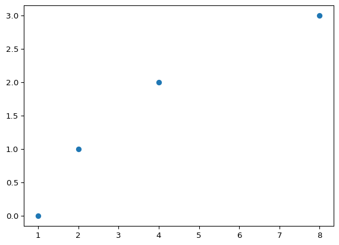

import numpy as npimport jsonimport inspect# https://muted.io/note-frequencies/data = np.genfromtxt('notes.txt', delimiter='\t', dtype=str)row_names = data[:, 0].tolist()numerical_data = np.matrix.transpose(data[:, 1:]).astype(float).tolist()print("<script>")print("statejs['notenames']= ")print(json.dumps(row_names))print("statejs['frequencies']= ")nofreq = [itemfor subl in [list(map(lambda n,f: [n, idx, f], row_names, fs))for idx, fs inenumerate(numerical_data)]for item in subl]frequencies = [n[2] for n in nofreq]print(json.dumps([[nf[0] +str(nf[1]), nf[2]] for nf in nofreq ifnot nf[0].endswith("s")]))print("</script>")# instead of using the plain js# print("<script src='jsfiles/notes.js'></script>")# we load the respective Scittle codeprint("<script>")withopen('notes.cljs', 'r') asfile: data =file.read().replace('\n', '')print("scittle.core.eval_string('", data, "')")print("</script>")
1
ABCDEF
Sometimes, you need to start with the basics. I am sure you have your own ways to do mathematical plots. My own way for plotting has, I think, its merits. But that’s for you to decide. I’ll come to the main quality of my way to plot in a minute. But as a first step, I needed to make a choice for the mathematical target to plot. I chose the musical scale. – The notes are logarithmic.
While it is the log2 that fits the notes, it is not the plain log2. There need to be some scale factors. – If you want, you can play with the formula yourself, because this notebook is online at the following address
But I have jumped ahead. The story starts with the Python language. And plotting just the plain log2. And that already hits upon the main message of my presentation.
print("<script>")withopen('log23.cljs', 'r') asfile: data =file.read().replace('\n', '')print("scittle.core.eval_string('", data, "')")print("</script>")
3
plot(log2, [1, 2, 4, 8])

The message is this. – It is the log2 that you plot. This is so obvious that I’d like to state what log2 is not. It is not the log2 of x or y or z. Also, it is not some text that contains the string log2. Rather, log2 is a mathematical object. Only objects like this are suitable for plotting within the paradigm of my presentation.
I am aware that you need some time for digesting my self-imposed plotting restrictions. So I move more towards the practical goal. -B- I need to get more to something like this. For that, I need to get back to the formula I showed at the start.
The formula I showed at the start is not something you can plot. -B- This is the main theme again. The theme is that I need a proper mathematical target to plot. To arrive at such a target, it is necessary to bind the formula to a procedure. -C- The procedure itself I gave the name Poe. It takes three arguments. Two parameters and the frequency x. -D- The procedure does the wanted computation, it returns the value given by the formula. -E- In its code, you have to replace the numbers with the names of the two parameters. I provide the procedure as Python code. -F-
I can plot log2 because it is a mathematical object. -B- But still I cannot plot the procedure Poe. -C- I need an operation called “partial” to transform Poe into the proper target to plot. -D- The procedure named “partial” takes “Poe” as an argument. – Then I can perform the plotting. -E- Here is the main theme in spades: “partial” taking a procedure to deliver the target to plot. -F- I turn all this into yet another procedure named log2b – That is very convenient for plotting. -G-
Not only can log2b be plotted. -B- Log2b can also be called. -C- Not only can log2b be called with data of type number. Log2b can also be called with a symbol. -DE- Using symbols along with numbers is possible thanks to a package named Sympy. Here you see that for the name of the symbol I chose x-naught. But x-naught is only the default of possible choices. As a symbol, for example, I can also choose x1. -F- For log2b, the x1 is just yet another data that happens to be of type symbol. This idea of “symbols as data” is a source for the freedom of choice. -G- Before being able to process some data, log2b needs to be initialized with two parameters. But these do not need to be of type integer. The float 0.7 does nicely as well. -a-
I would not have bothered you with my O point seven invention, hadn’t I discovered it to be a segue to the natural logarithm. -B- In general, you can fit a series of triangles onto any curve. -C- Moving those triangles to the ground level reveals -D- that a new curve “one over x” fits their heights quite agreeably. −E− You can also try the other way around -F- That does not work quite as well. -G- The trick is to shrink the area while retaining the angles.
I hope my triangles just formed an agreeable entertainment. For me they were (while making them). In conclusion, I assume you caught on to the topic I am aiming at: -D- differentiation. – Taking the derivative of log2b is simple and easy.
With the log2b initialized at O point seven, I calculate its derivative. As a result I almost get one over x. To become exact, I need to switch to “ln”, the natural logarithm. The pictures above can, within this presentation, be called its pinnacle. As a kind of confirmation, I’d like to drop some names. In math, the procedure named “call” is a functional while D is an operator. In computer science, both is called functions of higher order. The natural logarithm “ln” of course is a function in any field.
I’d like to wind down with a note on notation. When I differentiate a function like “ln” and then evaluate that derivative at x-naught, the common notation is the vertical bar. This bar is also called “pipe”.
Inspired by math, I also use pipe in my pictures. -B- Note that it is not the D operator that is replaced by the pipe, but it is the “call” that is dropped. – Not only can “pipe” be used in pictorial representations. The pipe can also be used within Python code. -C- You might think that my pipe notation is hard to implement. This is not so. My custom pipe is just a few lines of Python. – The pipe symbol is an invented alternative notation. For the following grand finale, I’d like to discover its explenatory virtues.
class PipeAsCall(object):def__init__(self, func):self.func = funcdef__or__(self, other):returnself.func(other)def__call__(self, x):returnself.func(x)def partial(*args):return PipeAsCall( functools.partial(*args))
11
ABCEGb
The pipe notation is very versatile. I can also use it when plotting something. -B- In my dataset, -C- the highest frequency is eight kilohertz. -D- I’d like to cut that down to 900 cycles per second. -E- So I apply a filter – and plot. -F- I want to move the filtering to the left. Or in a more picturesque manner: I want the filtering to be ahead of the pipes. For this, I use function composition. -G- This composition is completely decoupled from input sources and output formats. This leads to a method commonly known as “transducing” – Transducers are ahead of the pipe. -ab- For sure you can insert differentiation into the composition as easily as ever. -c-